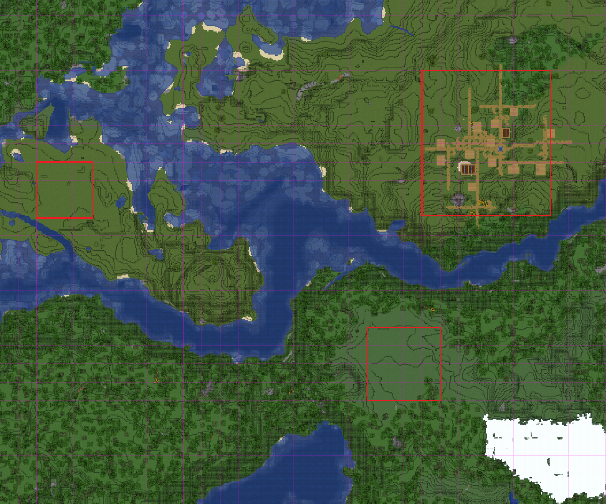
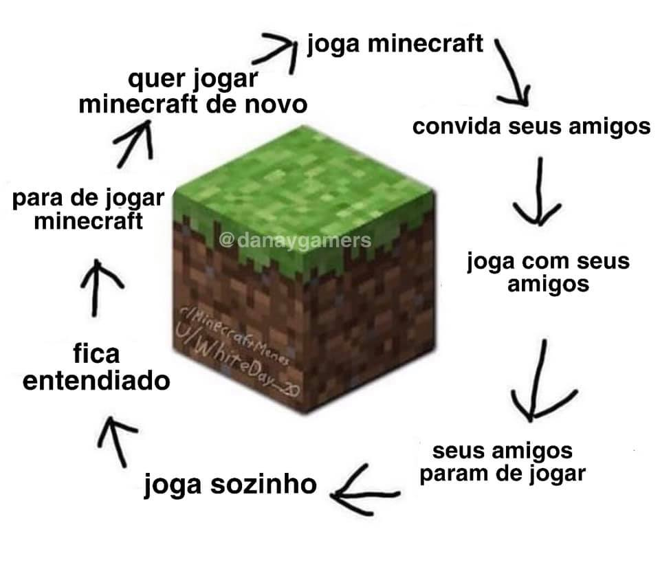
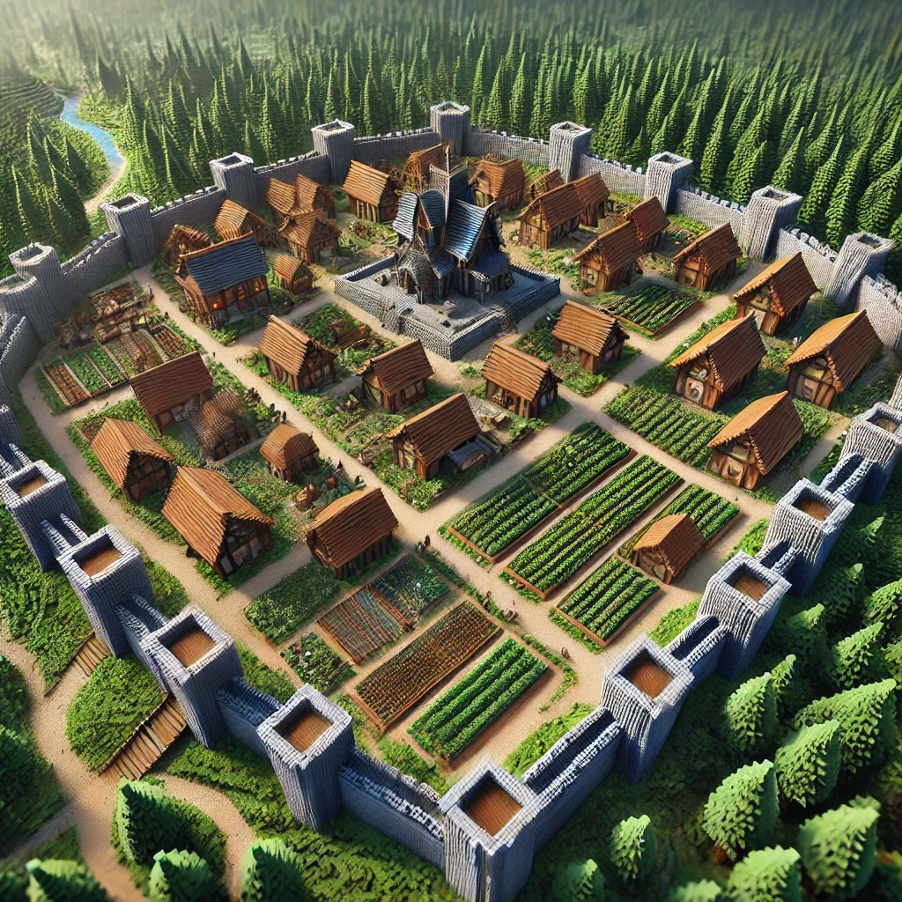
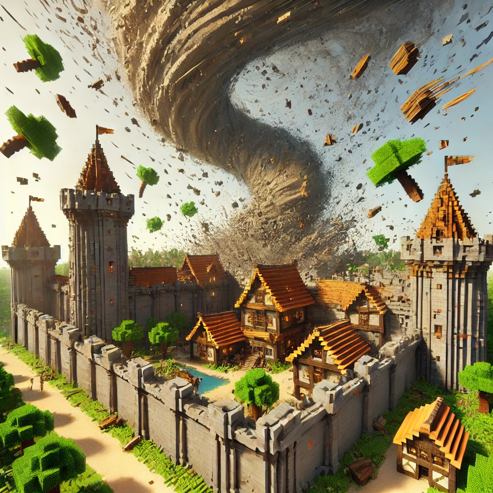
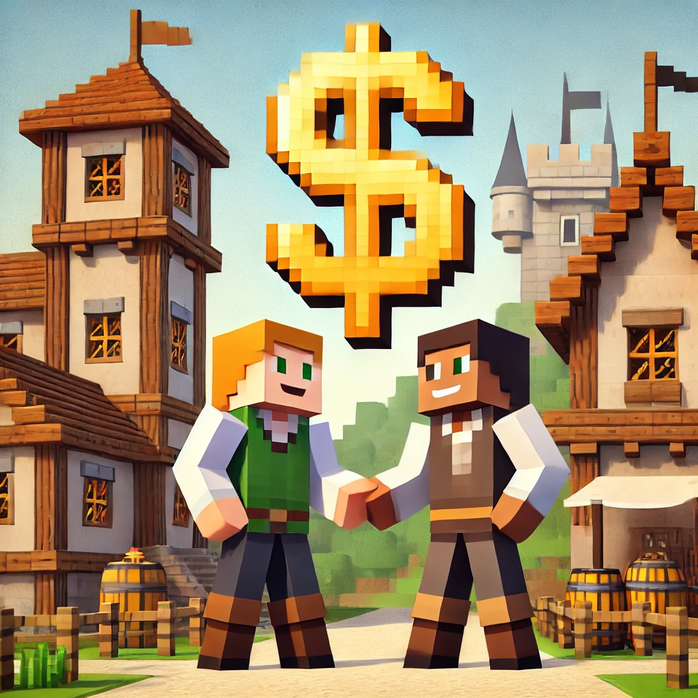
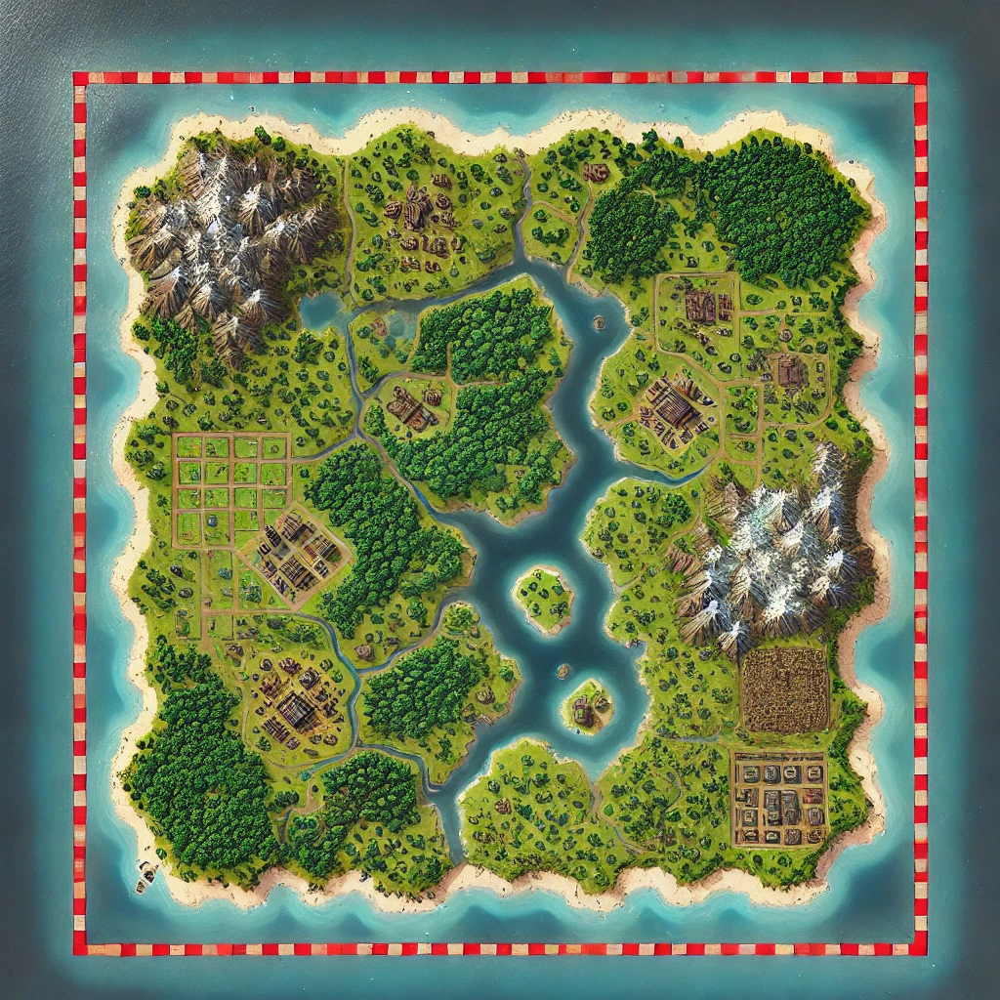
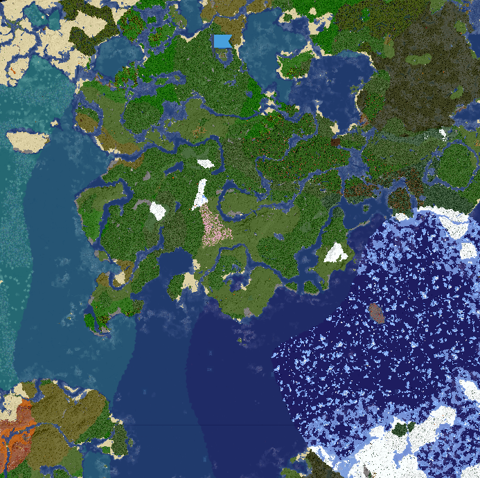

O que é
Mineverso é um servidor hospedado online (24/7), criado e gerenciado por mim, Gustavo (narvane).
A ideia é ter um mundo centralizado, inspirado no conceito de metaverso, onde várias pessoas podem ter uma experiência conectada, utilizando Minecraft Vanilla multiplayer.
É um servidor com plugins que ajustam levemente a experiência do Minecraft Vanilla, todos com o intuito de possibilitar um servidor semi-público (para amigos e amigos de amigos), garantindo ordem e propósito.
Como o servidor funciona
Pra você que curte jogar um mine, sozinho ou com uma galera, você me aponta um lugar no mapa e eu te dou um lote lá.
Lotes são chunks protegidos contra griefing, ou seja, só você e seus amigos podem construir e destruir.
Esses lotes na verdade são chamados de "Cidades", e você que me solicitar um, vai ser o "Prefeito". Como prefeito, você convida seus amigos para virarem residentes e poderem interagir com o local.
Proposta do servidor
A proposta é elevar a experiência clássica do Minecraft, onde você entra em um mundo vasto, escolhe seu lugar e constrói o que quiser, tornando-a mais dinâmica e interativa. Agora, você ainda pode escolher seu cantinho para explorar e criar, mas em um mundo mais vivo, com outros jogadores, onde as interações enriquecem sua jornada. E evitar isso aqui:
Plugins utilizados:
-  Cidades: para alocação de terrenos em cidades/vilarejos/colônias/nações.
-  Desastres naturais: para dificultar um pouco o jogo e incentivar os jogadores a não viverem fora das cidades.
-  Economia: sistema de venda de itens, incentivando mais interações entre os jogadores.
-  Limite de mundo: limita o tamanho do mundo, aumentando a chance de interações entre players.
OBS: Cidades são protegidas de Desastres Naturais.
Mapa
Você pode visualizar o mapa do servidor. Veja aqui o mapa.
Desculpe o pinto no centro do mapa kkkk Foi da própria geração de biomas ¯\_( ͡ᵔ ͜ʖ ͡ᵔ)_/¯
Como jogar
Entre no Discord e siga as informações nos canais, para solicitar seu nome na whitelist e sua cidade.
Ou sinta-se a vontade para me chamar em qualquer lugar, se tiver meu contato!
Solicitando, só aguardar até eu fazer seu acesso.
 Entre no Discord
Entre no Discord